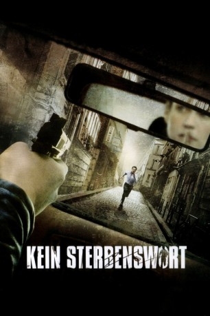

#1759 Kein Sterbenswort
Alternativ: Tell No One (Englischer Titel)
 
 IMDB-Wertung: 7.5 / 10
IMDB-Wertung: 7.5 / 10  Metascore: 82
Metascore: 82 
Vor 8 Jahren wurde Margot, Alexanders Frau von einem Serienmöder umgebracht. Die Polizei verdächdigte ihren Eheman Alexander. Auch Alexander selbst ist auf der Suche nach der Wahrheit was damals wirklich passiert ist. Denn plötzlich erhält Alexander mysteröse Emails mit Bildern und Nachrichten seiner angeblich tot geglauben Frau. Als die Polizei plötzlich wieder die Ermittlungen in dem Fall aufnimmt und Alexander noch eines neues Mordes angeklagt wird, flüchtet er und nimmt die Ermittlungen in die eigene Hand.
Jahr: 2006
Dauer: 131 Minuten
FSK: 16
Land: Frankreich Studio: UFATonspuren:
Untertitel:
Auflösung: 1080p (1920x816) Größe: 7311 MB
Genre: Krimi, Drama, Mystery, Thriller
Regisseur:  Guillaume Canet
Guillaume Canet
Drehbuch: Guillaume Canet, Harlan Coben, Philippe Lefebvre
Soundtrack: Matthieu Chedid
Darsteller:
 François Cluzet als Alexandre Beck
François Cluzet als Alexandre Beck Marie-Josée Croze als Margot Beck
Marie-Josée Croze als Margot Beck André Dussollier als Jacques Laurentin
André Dussollier als Jacques Laurentin Kristin Scott Thomas als Hélène Perkins
Kristin Scott Thomas als Hélène Perkins François Berléand als Eric Levkowitch
François Berléand als Eric Levkowitch Nathalie Baye als Maître Elysabeth Feldman
Nathalie Baye als Maître Elysabeth Feldman Jean Rochefort als Gilbert Neuville
Jean Rochefort als Gilbert Neuville Marina Hands als Anne Beck
Marina Hands als Anne Beck Gilles Lellouche als Bruno
Gilles Lellouche als Bruno Guillaume Canet als Philippe Neuville
Guillaume Canet als Philippe Neuville Samir Guesmi als Lieutenant Saraoui
Samir Guesmi als Lieutenant Saraoui- Eric Savin als Le procureur
 Thierry Neuvic als Marc Bertaud
Thierry Neuvic als Marc Bertaud- Mika Ela Fisher als Zak
- Christof Veillon als Le douanier
 Anne Marivin als Secrétaire d'Alex
Anne Marivin als Secrétaire d'Alex- Philippe Lefebvre als Lieutenant Philippe Meynard
- Florence Thomassin als Charlotte Bertaud
- Olivier Marchal als Bernard Valenti
- Brigitte Catillon als Capitaine Barthas
 Jean-Pierre Lorit als Adjudant-chef Lavelle
Jean-Pierre Lorit als Adjudant-chef Lavelle- Jalil Lespert als Yaël Gonzales
- Eric Naggar als Maître Pierre Ferrault
- Philippe Canet als François Beck
- Danièle Ajoret als Madame Beck
- Daniel Znyk als Le médecin-légiste
 Laurent Lafitte als Le Basque
Laurent Lafitte als Le Basque- Jean-Christophe Pagnac als Informaticien Valenti
- Dorothée Brière als L'hôtesse de l'air
- Jean-Noël Brouté als Docteur Dubois
- Joël Dupuch als Homme massif
- Martine Chevallier als Martine Laurentin
- François Bredon als Mouss
- Maxim Nucci als Assistant de Charlotte Bertaud
- Hugo Sélignac als Mannequin studio photo
- Ludovic Bergery als Jeune policier
- Robin Marmisse als Alex enfant
- Marie Martin als Margot enfant
- Brooklyn Beral als L'enfant daltonien
- Christelle Beral als Mme Abdibal, la mère de l'enfant daltonien
 Sara Martins als L'amie de Bruno
Sara Martins als L'amie de Bruno- Alexandra Mercouroff als La mère de Lucille
- Lola Lefebvre als Lucille
- Christian Carion als Le père de Lucille
- Brian Lucas als Le tireur de la cité
- Mamadou Gary als Joueur PlayStation
- Pierre-Benoist Varoclier als Infirmier 1
- Nicolas Mouchet als Infirmier 2
- Karim Adda als Patient impatient
- Christophe Rossignon als Policier scientifique
Datei: X:\2006(G-M)\Kein Sterbenswort (2006, FSK16, 1920x816).mkv seit 17.08.2015
Festplatte: HD 2005(G-Z)-2006(A-Z)
 Es gibt insgesamt 48 Filme in der Gruppe '2006(G-M)'
Es gibt insgesamt 48 Filme in der Gruppe '2006(G-M)'